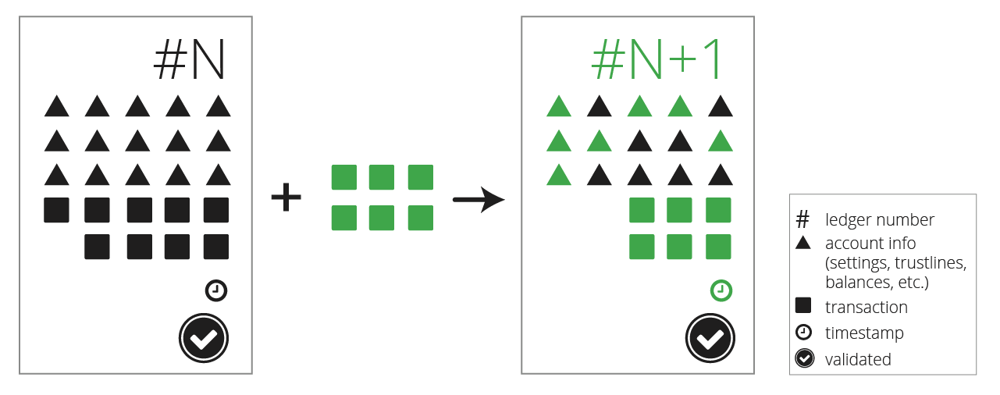
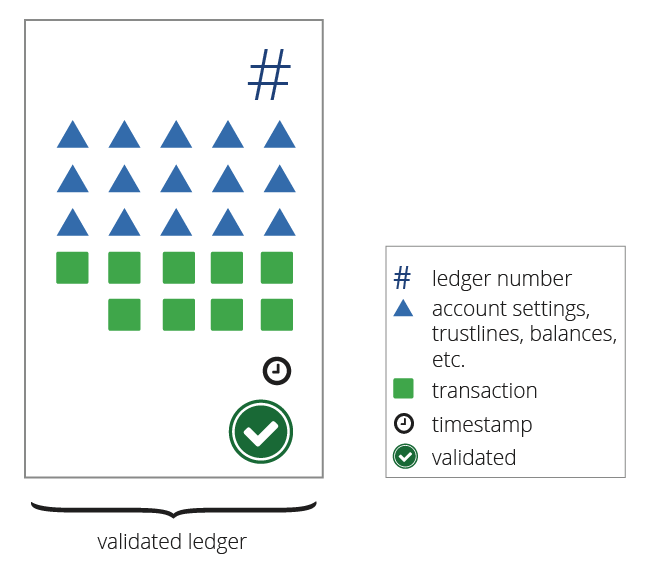
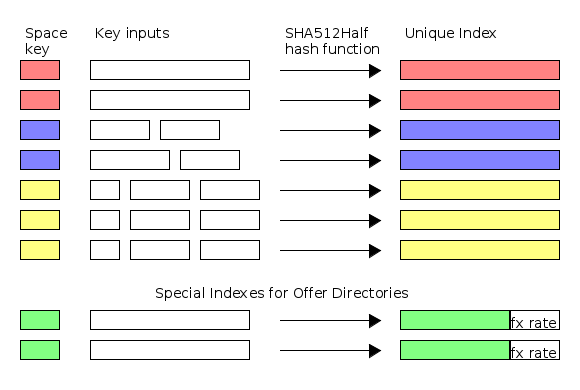

XRP Ledger Data Format
XRP Ledger Data Format
The XRP Ledger is a shared, global ledger that is open to all. Individual participants can trust the integrity of the ledger without having to trust any single institution to manage it. The rippled server software accomplishes this by managing a ledger database that can only be updated according to very specific rules. Each instance of rippled keeps a full copy of the ledger, and the peer-to-peer network of rippled servers distributes candidate transactions among themselves. The consensus process determines which transactions get applied to each new version of the ledger. See also: The Consensus Process.

The shared global ledger is actually a series of individual ledgers, or ledger versions, which rippled keeps in its internal database. Every ledger version has a ledger index which identifies the order in which ledgers occur. Each closed ledger version also has an identifying hash value, which uniquely identifies the contents of that ledger. At any given time, a rippled instance has an in-progress "current" open ledger, plus some number of closed ledgers that have not yet been approved by consensus, and any number of historical ledgers that have been validated by consensus. Only the validated ledgers are certain to be correct and immutable.
A single ledger version consists of several parts:

- A header - The ledger index, hashes of its other contents, and other metadata.
- A transaction tree - The transactions that were applied to the previous ledger to make this one. Transactions are the only way to change the ledger.
- A state tree - All the ledger objects that contain the settings, balances, and objects in the ledger as of this version.
Tree Format
As its name might suggest, a ledger's state tree is a tree data structure. Each object in the state tree is identified by a 256-bit object ID. In JSON, a ledger object's ID is the index field, which contains a 64-character hexadecimal string like "193C591BF62482468422313F9D3274B5927CA80B4DD3707E42015DD609E39C94". Every object in the state tree has an ID that you can use to look up that object; every transaction has an indentifying hash that you can use to look up the transaction in the transaction tree. Do not confuse the index (ID) of a ledger object with the ledger_index (sequence number) of a ledger.
Tip: Sometimes, an object in the ledger's state tree is called a "ledger node". For example, transaction metadata returns a list of AffectedNodes. Do not confuse this with a "node" (server) in the peer-to-peer network.
In the case of transactions, the identifying hash is based on the signed transaction instructions, but the contents of the transaction object when you look it up also contain the results and metadata of the transaction, which are not taken into account when generating the hash.
Object IDs
All objects in a ledger' state tree have a unique ID. This field is returned as the index field in JSON, at the same level as the object's contents. The ID is derived by hashing important contents of the object, along with a namespace identifier. The ledger object type determines which namespace identifier to use and which contents to include in the hash. This ensures every ID is unique. To calculate the hash, rippled uses SHA-512 and then truncates the result to the first 256 bytes. This algorithm, informally called SHA-512Half, provides an output that has comparable security to SHA-256, but runs faster on 64-bit processors.

Header Format
Every ledger version has a unique header that describes the contents. You can look up a ledger's header information with the ledger command. The contents of the ledger header are as follows:
| Field | JSON Type | Internal Type | Description |
|---|---|---|---|
ledger_index |
String | UInt32 | The sequence number of the ledger. Some API methods display this as a quoted integer; some display it as a native JSON number. |
ledger_hash |
String | Hash256 | The SHA-512Half of the ledger header, excluding the ledger_hash itself. This serves as a unique identifier for this ledger and all its contents. |
account_hash |
String | Hash256 | The SHA-512Half of this ledger's state tree information. |
close_time |
Number | UInt32 | The approximate time this ledger closed, as the number of seconds since the Ripple Epoch of 2000-01-01 00:00:00. This value is rounded based on the close_time_resolution, so later ledgers can have the same value. |
closed |
Boolean | bool | If true, this ledger version is no longer accepting new transactions. (However, unless this ledger version is validated, it might be replaced by a different ledger version with a different set of transactions.) |
parent_hash |
String | Hash256 | The ledger_hash value of the previous ledger that was used to build this one. If there are different versions of the previous ledger index, this indicates from which one the ledger was derived. |
total_coins |
String | UInt64 | The total number of drops of XRP owned by accounts in the ledger. This omits XRP that has been destroyed by transaction fees. The actual amount of XRP in circulation is lower because some accounts are "black holes" whose keys are not known by anyone. |
transaction_hash |
String | Hash256 | The SHA-512Half of the transactions included in this ledger. |
close_time_resolution |
Number | Uint8 | An integer in the range [2,120] indicating the maximum number of seconds by which the close_time could be rounded. |
closeFlags |
(Omitted) | UInt8 | A bit-map of flags relating to the closing of this ledger. |
Ledger Index
A ledger index is a 32-bit unsigned integer used to identify a ledger. The ledger index is also known as the ledger's sequence number. The very first ledger was ledger index 1, and each new ledger has a ledger index 1 higher than that of the ledger immediately before it.
The ledger index indicates the order of the ledgers; the Hash value identifies the exact contents of the ledger. Two ledgers with the same hash are always the same. For validated ledgers, hash values and sequence numbers are equally valid and correlate 1:1. However, this is not true for in-progress ledgers:
- Two different
rippledservers may have different contents for a current ledger with the same ledger index, due to latency in propagating transactions throughout the network. - There may be multiple closed ledger versions competing to be validated by consensus. These ledger versions have the same sequence number but different contents (and different hashes). Only one of these closed ledgers can become validated.
- A current ledger's contents change over time, which would cause its hash to change, even though its ledger index number stays the same. The hash of a ledger is not calculated until the ledger is closed.
Close Flags
The ledger has only one flag defined for closeFlags: sLCF_NoConsensusTime (value 1). If this flag is enabled, it means that validators had different close times for the ledger, but built otherwise the same ledger, so they declared consensus while "agreeing to disagree" on the close time. In this case, the consensus ledger version contains a close_time value that is 1 second after that of the previous ledger. (In this case, there is no official close time, but the actual real-world close time is probably 3-6 seconds later than the specified close_time.)
The closeFlags field is not included in any JSON representations of a ledger, but is included in the binary representation of a ledger, and is one of the fields that determine the ledger's hash.
Ledger Object Types
There are several different kinds of objects that can appear in the ledger's state tree:
- AccountRoot - The settings, XRP balance, and other metadata for one account.
- Amendments - Singleton object with status of enabled and pending amendments.
- Check - A check that can be redeemed for money by its destination
- DirectoryNode - Contains links to other objects.
- Escrow - Contains XRP held for a conditional payment.
- FeeSettings - Singleton object with consensus-approved base transaction cost and reserve requirements.
- LedgerHashes - Lists of prior ledger versions' hashes for history lookup.
- Offer - An offer to exchange currencies, known in finance as an order.
- PayChannel - A channel for asynchronous XRP payments.
- RippleState - Links two accounts, tracking the balance of one currency between them. The concept of a trust line is really an abstraction of this object type.
- SignerList - A list of addresses for multi-signing transactions.
Each ledger object consists of several fields. In the peer protocol that rippled servers use to communicate with each other, ledger objects are represented in their raw binary format. In other rippled APIs, ledger objects are represented as JSON objects.
AccountRoot
The AccountRoot object type describes a single account object. Example AccountRoot object:
{
"Account": "rf1BiGeXwwQoi8Z2ueFYTEXSwuJYfV2Jpn",
"AccountTxnID": "0D5FB50FA65C9FE1538FD7E398FFFE9D1908DFA4576D8D7A020040686F93C77D",
"Balance": "148446663",
"Domain": "6D64756F31332E636F6D",
"EmailHash": "98B4375E1D753E5B91627516F6D70977",
"Flags": 8388608,
"LedgerEntryType": "AccountRoot",
"MessageKey": "0000000000000000000000070000000300",
"OwnerCount": 3,
"PreviousTxnID": "0D5FB50FA65C9FE1538FD7E398FFFE9D1908DFA4576D8D7A020040686F93C77D",
"PreviousTxnLgrSeq": 14091160,
"Sequence": 336,
"TransferRate": 1004999999,
"index": "13F1A95D7AAB7108D5CE7EEAF504B2894B8C674E6D68499076441C4837282BF8"
}
The AccountRoot object has the following fields:
| Field | JSON Type | Internal Type | Description |
|---|---|---|---|
LedgerEntryType |
String | UInt16 | The value 0x0061, mapped to the string AccountRoot, indicates that this is an AccountRoot object. |
Account |
String | AccountID | The identifying address of this account, such as rf1BiGeXwwQoi8Z2ueFYTEXSwuJYfV2Jpn. |
Balance |
String | Amount | The account's current XRP balance in drops, represented as a string. |
Flags |
Number | UInt32 | A bit-map of boolean flags enabled for this account. |
OwnerCount |
Number | UInt32 | The number of objects this account owns in the ledger, which contributes to its owner reserve. |
PreviousTxnID |
String | Hash256 | The identifying hash of the transaction that most recently modified this object. |
PreviousTxnLgrSeq |
Number | UInt32 | The index of the ledger that contains the transaction that most recently modified this object. |
Sequence |
Number | UInt32 | The sequence number of the next valid transaction for this account. (Each account starts with Sequence = 1 and increases each time a transaction is made.) |
AccountTxnID |
String | Hash256 | (Optional) The identifying hash of the transaction most recently submitted by this account. |
Domain |
String | VariableLength | (Optional) A domain associated with this account. In JSON, this is the hexadecimal for the ASCII representation of the domain. |
EmailHash |
String | Hash128 | (Optional) The md5 hash of an email address. Clients can use this to look up an avatar through services such as Gravatar. |
MessageKey |
String | VariableLength | (Optional) A public key that may be used to send encrypted messages to this account. In JSON, uses hexadecimal. No more than 33 bytes. |
RegularKey |
String | AccountID | (Optional) The address of a keypair that can be used to sign transactions for this account instead of the master key. Use a SetRegularKey transaction to change this value. |
TickSize |
Number | UInt8 | (Optional) How many significant digits to use for exchange rates of Offers involving currencies issued by this address. Valid values are 3 to 15, inclusive. (Requires the TickSize amendment.) |
TransferRate |
Number | UInt32 | (Optional) A transfer fee to charge other users for sending currency issued by this account to each other. |
WalletLocator |
String | Hash256 | (Optional) DEPRECATED. Do not use. |
WalletSize |
Number | UInt32 | (Optional) DEPRECATED. Do not use. |
AccountRoot Flags
There are several options which can be either enabled or disabled for an account. These options can be changed with an AccountSet transaction. In the ledger, flags are represented as binary values that can be combined with bitwise-or operations. The bit values for the flags in the ledger are different than the values used to enable or disable those flags in a transaction. Ledger flags have names that begin with lsf.
AccountRoot objects can have the following flag values:
| Flag Name | Hex Value | Decimal Value | Description | Corresponding AccountSet Flag |
|---|---|---|---|---|
| lsfDefaultRipple | 0x00800000 | 8388608 | Enable rippling on this addresses's trust lines by default. Required for issuing addresses; discouraged for others. | asfDefaultRipple |
| lsfDepositAuth | 0x01000000 | 16777216 | This account can only receive funds from transactions it sends. (It has DepositAuth enabled.) | asfDepositAuth |
| lsfDisableMaster | 0x00100000 | 1048576 | Disallows use of the master key to sign transactions for this account. | asfDisableMaster |
| lsfDisallowXRP | 0x00080000 | 524288 | Client applications should not send XRP to this account. Not enforced by rippled. |
asfDisallowXRP |
| lsfGlobalFreeze | 0x00400000 | 4194304 | All assets issued by this address are frozen. | asfGlobalFreeze |
| lsfNoFreeze | 0x00200000 | 2097152 | This address cannot freeze trust lines connected to it. Once enabled, cannot be disabled. | asfNoFreeze |
| lsfPasswordSpent | 0x00010000 | 65536 | The account has used its free SetRegularKey transaction. | (None) |
| lsfRequireAuth | 0x00040000 | 262144 | This account must individually approve other users for those users to hold this account's issuances. | asfRequireAuth |
| lsfRequireDestTag | 0x00020000 | 131072 | Requires incoming payments to specify a Destination Tag. | asfRequireDest |
AccountRoot ID Format
The ID of an AccountRoot object is the SHA-512Half of the following values, concatenated in order:
- The Account space key (
0x0061) - The AccountID of the account
Amendments
The Amendments object type contains a list of Amendments that are currently active. Each ledger version contains at most one Amendments object.
Example Amendments object:
{
"Majorities": [
{
"Majority": {
"Amendment": "1562511F573A19AE9BD103B5D6B9E01B3B46805AEC5D3C4805C902B514399146",
"CloseTime": 535589001
}
}
],
"Amendments": [
"42426C4D4F1009EE67080A9B7965B44656D7714D104A72F9B4369F97ABF044EE",
"4C97EBA926031A7CF7D7B36FDE3ED66DDA5421192D63DE53FFB46E43B9DC8373",
"6781F8368C4771B83E8B821D88F580202BCB4228075297B19E4FDC5233F1EFDC",
"740352F2412A9909880C23A559FCECEDA3BE2126FED62FC7660D628A06927F11"
],
"Flags": 0,
"LedgerEntryType": "Amendments",
"index": "7DB0788C020F02780A673DC74757F23823FA3014C1866E72CC4CD8B226CD6EF4"
}
| Name | JSON Type | Internal Type | Description |
|---|---|---|---|
Amendments |
Array | STI_VECTOR256 | (Optional) Array of 256-bit amendment IDs for all currently-enabled amendments. If omitted, there are no enabled amendments. |
Majorities |
Array | STI_ARRAY | (Optional) Array of objects describing the status of amendments that have majority support but are not yet enabled. If omitted, there are no pending amendments with majority support. |
Flags |
Number | UInt32 | A bit-map of boolean flags. No flags are defined for the Amendments object type, so this value is always 0. |
LedgerEntryType |
String | UInt16 | The value 0x0066, mapped to the string Amendments, indicates that this object describes the status of amendments to the XRP Ledger. |
Each member of the Majorities field, if it is present, is an object with one field, Majority, whose contents are a nested object with the following fields:
| Name | JSON Type | Internal Type | Description |
|---|---|---|---|
Amendment |
String | Hash256 | The Amendment ID of the pending amendment. |
CloseTime |
Number | UInt32 | The close_time field of the ledger version where this amendment most recently gained a majority. |
In the amendment process, a consensus of validators adds a new amendment to the Majorities field using an EnableAmendment pseudo-transaction with the tfGotMajority flag when 80% or more of validators support it. If support for a pending amendment goes below 80%, an EnableAmendment pseudo-transaction with the tfLostMajority flag removes the amendment from the Majorities array. If an amendment remains in the Majorities field for at least 2 weeks, an EnableAmendment pseudo-transaction with no flags removes it from Majorities and permanently adds it to the Amendments field.
Note: Technically, all transactions in a ledger are processed based on which amendments are enabled in the ledger version immediately before it. While applying transactions to a ledger version where an amendment becomes enabled, the rules don't change mid-ledger. After the ledger is closed, the next ledger uses the new rules as defined by any new amendments that applied.
Amendments ID Format
The Amendments object ID is the hash of the Amendments space key (0x0066) only. This means that the ID of the Amendments object in a ledger is always:
7DB0788C020F02780A673DC74757F23823FA3014C1866E72CC4CD8B226CD6EF4
(Don't mix up the ID of the Amendments ledger object type with the Amendment ID of an individual amendment.)
Check
Requires the Checks Amendment.
A Check object describes a check, similar to a paper personal check, which can be cashed by its destination to get money from its sender. (The potential payment has already been approved by its sender, but no money moves until it is cashed. Unlike an Escrow, the money for a Check is not set aside, so cashing the Check could fail due to lack of funds.) Example Check object:
{
"Account": "rUn84CUYbNjRoTQ6mSW7BVJPSVJNLb1QLo",
"Destination": "rfkE1aSy9G8Upk4JssnwBxhEv5p4mn2KTy",
"DestinationNode": "0000000000000000",
"DestinationTag": 1,
"Expiration": 570113521,
"Flags": 0,
"InvoiceID": "46060241FABCF692D4D934BA2A6C4427CD4279083E38C77CBE642243E43BE291",
"LedgerEntryType": "Check",
"OwnerNode": "0000000000000000",
"PreviousTxnID": "5463C6E08862A1FAE5EDAC12D70ADB16546A1F674930521295BC082494B62924",
"PreviousTxnLgrSeq": 6,
"SendMax": "100000000",
"Sequence": 2,
"index": "49647F0D748DC3FE26BDACBC57F251AADEFFF391403EC9BF87C97F67E9977FB0"
}
A Check object has the following fields:
| Field | JSON Type | Internal Type | Description |
|---|---|---|---|
LedgerEntryType |
String | UInt16 | The value 0x0043, mapped to the string Check, indicates that this object is a Check object. |
Account |
String | Account | The sender of the Check. Cashing the Check debits this address's balance. |
Destination |
String | Account | The intended recipient of the Check. Only this address can cash the Check, using a CheckCash transaction. |
Flags |
Number | UInt32 | A bit-map of boolean flags. No flags are defined for Checks, so this value is always 0. |
OwnerNode |
String | UInt64 | A hint indicating which page of the sender's owner directory links to this object, in case the directory consists of multiple pages. Note: The object does not contain a direct link to the owner directory containing it, since that value can be derived from the Account. |
PreviousTxnID |
String | Hash256 | The identifying hash of the transaction that most recently modified this object. |
PreviousTxnLgrSeq |
Number | UInt32 | The index of the ledger that contains the transaction that most recently modified this object. |
SendMax |
String or Object | Amount | The maximum amount of currency this Check can debit the sender. If the Check is successfully cashed, the destination is credited in the same currency for up to this amount. |
Sequence |
Number | UInt32 | The sequence number of the CheckCreate transaction that created this check. |
DestinationNode |
String | UInt64 | (Optional) A hint indicating which page of the destination's owner directory links to this object, in case the directory consists of multiple pages. |
DestinationTag |
Number | UInt32 | (Optional) An arbitrary tag to further specify the destination for this Check, such as a hosted recipient at the destination address. |
Expiration |
Number | UInt32 | (Optional) Indicates the time after which this Check is considered expired. See Specifying Time for details. |
InvoiceID |
String | Hash256 | (Optional) Arbitrary 256-bit hash provided by the sender as a specific reason or identifier for this Check. |
SourceTag |
Number | UInt32 | (Optional) An arbitrary tag to further specify the source for this Check, such as a hosted recipient at the sender's address. |
Check ID Format
The ID of a Check object is the SHA-512Half of the following values, concatenated in order:
- The Check space key (
0x0043) - The AccountID of the sender of the CheckCreate transaction that created the
Checkobject - The Sequence number of the CheckCreate transaction that created the
Checkobject
DirectoryNode
The DirectoryNode object type provides a list of links to other objects in the ledger's state tree. A single conceptual Directory takes the form of a doubly linked list, with one or more DirectoryNode objects each containing up to 32 IDs of other objects. The first object is called the root of the directory, and all objects other than the root object can be added or deleted as necessary.
There are two kinds of Directories:
- Owner directories list other objects owned by an account, such as
RippleStateorOfferobjects. - Offer directories list the offers available in the distributed exchange. A single Offer directory contains all the offers that have the same exchange rate for the same issuances.
Example Directories:
{
"ExchangeRate": "4F069BA8FF484000",
"Flags": 0,
"Indexes": [
"AD7EAE148287EF12D213A251015F86E6D4BD34B3C4A0A1ED9A17198373F908AD"
],
"LedgerEntryType": "DirectoryNode",
"RootIndex": "1BBEF97EDE88D40CEE2ADE6FEF121166AFE80D99EBADB01A4F069BA8FF484000",
"TakerGetsCurrency": "0000000000000000000000000000000000000000",
"TakerGetsIssuer": "0000000000000000000000000000000000000000",
"TakerPaysCurrency": "0000000000000000000000004A50590000000000",
"TakerPaysIssuer": "5BBC0F22F61D9224A110650CFE21CC0C4BE13098",
"index": "1BBEF97EDE88D40CEE2ADE6FEF121166AFE80D99EBADB01A4F069BA8FF484000"
}
{
"Flags": 0,
"Indexes": [
"AD7EAE148287EF12D213A251015F86E6D4BD34B3C4A0A1ED9A17198373F908AD",
"E83BBB58949A8303DF07172B16FB8EFBA66B9191F3836EC27A4568ED5997BAC5"
],
"LedgerEntryType": "DirectoryNode",
"Owner": "rpR95n1iFkTqpoy1e878f4Z1pVHVtWKMNQ",
"RootIndex": "193C591BF62482468422313F9D3274B5927CA80B4DD3707E42015DD609E39C94",
"index": "193C591BF62482468422313F9D3274B5927CA80B4DD3707E42015DD609E39C94"
}
| Name | JSON Type | Internal Type | Description |
|---|---|---|---|
LedgerEntryType |
String | UInt16 | The value 0x0064, mapped to the string DirectoryNode, indicates that this object is part of a Directory. |
Flags |
Number | UInt32 | A bit-map of boolean flags enabled for this directory. Currently, the protocol defines no flags for DirectoryNode objects. |
RootIndex |
Number | Hash256 | The ID of root object for this directory. |
Indexes |
Array | Vector256 | The contents of this Directory: an array of IDs of other objects. |
IndexNext |
Number | UInt64 | (Optional) If this Directory consists of multiple pages, this ID links to the next object in the chain, wrapping around at the end. |
IndexPrevious |
Number | UInt64 | (Optional) If this Directory consists of multiple pages, this ID links to the previous object in the chain, wrapping around at the beginning. |
Owner |
String | AccountID | (Owner Directories only) The address of the account that owns the objects in this directory. |
ExchangeRate |
Number | UInt64 | (Offer Directories only) DEPRECATED. Do not use. |
TakerPaysCurrency |
String | Hash160 | (Offer Directories only) The currency code of the TakerPays amount from the offers in this directory. |
TakerPaysIssuer |
String | Hash160 | (Offer Directories only) The issuer of the TakerPays amount from the offers in this directory. |
TakerGetsCurrency |
String | Hash160 | (Offer Directories only) The currency code of the TakerGets amount from the offers in this directory. |
TakerGetsIssuer |
String | Hash160 | (Offer Directories only) The issuer of the TakerGets amount from the offers in this directory. |
Directory ID Formats
There are three different formulas for creating the ID of a DirectoryNode, depending on which of the following the DirectoryNode represents:
- The first page (also called the root) of an Owner Directory
- The first page of an Offer Directory
- Later pages of either type
The first page of an Owner Directory has an ID that is the SHA-512Half of the following values, concatenated in order:
- The Owner Directory space key (
0x004F) - The AccountID from the
Ownerfield.
The first page of an Offer Directory has a special ID: the higher 192 bits define the order book, and the remaining 64 bits define the exchange rate of the offers in that directory. (The ID is big-endian, so the book is in the more significant bits, which come first, and the quality is in the less significant bits which come last.) This provides a way to iterate through an order book from best offers to worst. Specifically: the first 192 bits are the first 192 bits of the SHA-512Half of the following values, concatenated in order:
- The Book Directory space key (
0x0042) - The 160-bit currency code from the
TakerPaysCurrency - The 160-bit currency code from the
TakerGetsCurrency - The AccountID from the
TakerPaysIssuer - The AccountID from the
TakerGetsIssuer
The lower 64 bits of an Offer Directory's ID represent the TakerPays amount divided by TakerGets amount from the offer(s) in that directory as a 64-bit number in the XRP Ledger's internal amount format.
If the DirectoryNode is not the first page in the Directory (regardless of whether it is an Owner Directory or an Offer Directory), then it has an ID that is the SHA-512Half of the following values, concatenated in order:
- The DirectoryNode space key (
0x0064) - The ID of the root DirectoryNode
- The page number of this object. (Since 0 is the root DirectoryNode, this value is an integer 1 or higher.)
Escrow
(Requires the Escrow Amendment.)
The Escrow object type represents a held payment of XRP waiting to be executed or canceled. An EscrowCreate transaction creates an Escrow object in the ledger. A successful EscrowFinish or EscrowCancel transaction deletes the object. If the Escrow object has a crypto-condition, the payment can only succeed if an EscrowFinish transaction provides the corresponding fulfillment that satisfies the condition. (The only supported crypto-condition type is PREIMAGE-SHA-256.) If the Escrow object has a FinishAfter time, the held payment can only execute after that time.
An Escrow object is associated with two addresses:
- The owner, who provides the XRP when creating the
Escrowobject. If the held payment is canceled, the XRP returns to the owner. - The destination, where the XRP is paid when the held payment succeeds. The destination can be the same as the owner.
Example Escrow object:
{
"Account": "rf1BiGeXwwQoi8Z2ueFYTEXSwuJYfV2Jpn",
"Amount": "10000",
"CancelAfter": 545440232,
"Condition": "A0258020A82A88B2DF843A54F58772E4A3861866ECDB4157645DD9AE528C1D3AEEDABAB6810120",
"Destination": "ra5nK24KXen9AHvsdFTKHSANinZseWnPcX",
"DestinationTag": 23480,
"FinishAfter": 545354132,
"Flags": 0,
"LedgerEntryType": "Escrow",
"OwnerNode": "0000000000000000",
"DestinationNode": "0000000000000000",
"PreviousTxnID": "C44F2EB84196B9AD820313DBEBA6316A15C9A2D35787579ED172B87A30131DA7",
"PreviousTxnLgrSeq": 28991004,
"SourceTag": 11747,
"index": "DC5F3851D8A1AB622F957761E5963BC5BD439D5C24AC6AD7AC4523F0640244AC"
}
An Escrow object has the following fields:
| Name | JSON Type | Internal Type | Description |
|---|---|---|---|
LedgerEntryType |
String | UInt16 | The value 0x0075, mapped to the string Escrow, indicates that this object is an Escrow object. |
Account |
String | AccountID | The address of the owner (sender) of this held payment. This is the account that provided the XRP, and gets it back if the held payment is canceled. |
Destination |
String | AccountID | The destination address where the XRP is paid if the held payment is successful. |
Amount |
String | Amount | The amount of XRP, in drops, to be delivered by the held payment. |
Condition |
String | VariableLength | (Optional) A PREIMAGE-SHA-256 crypto-condition, as hexadecimal. If present, the EscrowFinish transaction must contain a fulfillment that satisfies this condition. |
CancelAfter |
Number | UInt32 | (Optional) The held payment can be canceled if and only if this field is present and the time it specifies has passed. Specifically, this is specified as seconds since the Ripple Epoch and it "has passed" if it's earlier than the close time of the previous validated ledger. |
FinishAfter |
Number | UInt32 | (Optional) The time, in seconds since the Ripple Epoch, after which this held payment can be finished. Any EscrowFinish transaction before this time fails. (Specifically, this is compared with the close time of the previous validated ledger.) |
Flags |
Number | UInt32 | A bit-map of boolean flags. No flags are defined for the Escrow type, so this value is always 0. |
SourceTag |
Number | UInt32 | (Optional) An arbitrary tag to further specify the source for this held payment, such as a hosted recipient at the owner's address. |
DestinationTag |
Number | UInt32 | (Optional) An arbitrary tag to further specify the destination for this held payment, such as a hosted recipient at the destination address. |
OwnerNode |
String | UInt64 | A hint indicating which page of the owner directory links to this object, in case the directory consists of multiple pages. Note: The object does not contain a direct link to the owner directory containing it, since that value can be derived from the Account. |
DestinationNode |
String | UInt64 | (Optional) A hint indicating which page of the destination's owner directory links to this object, in case the directory consists of multiple pages. Omitted on escrows created before enabling the fix1523 amendment. |
PreviousTxnID |
String | Hash256 | The identifying hash of the transaction that most recently modified this object. |
PreviousTxnLgrSeq |
Number | UInt32 | The index of the ledger that contains the transaction that most recently modified this object. |
Escrow ID Format
The ID of an Escrow object is the SHA-512Half of the following values, concatenated in order:
- The Escrow space key (
0x0075) - The AccountID of the sender of the EscrowCreate transaction that created the
Escrowobject - The Sequence number of the EscrowCreate transaction that created the
Escrowobject
FeeSettings
The FeeSettings object type contains the current base transaction cost and reserve amounts as determined by fee voting. Each ledger version contains at most one FeeSettings object.
Example FeeSettings object:
{
"BaseFee": "000000000000000A",
"Flags": 0,
"LedgerEntryType": "FeeSettings",
"ReferenceFeeUnits": 10,
"ReserveBase": 20000000,
"ReserveIncrement": 5000000,
"index": "4BC50C9B0D8515D3EAAE1E74B29A95804346C491EE1A95BF25E4AAB854A6A651"
}
The FeeSettings object has the following fields:
| Name | JSON Type | Internal Type | Description |
|---|---|---|---|
LedgerEntryType |
String | UInt16 | The value 0x0073, mapped to the string FeeSettings, indicates that this object contains the ledger's fee settings. |
BaseFee |
String | UInt64 | The transaction cost of the "reference transaction" in drops of XRP as hexadecimal. |
ReferenceFeeUnits |
Number | UInt32 | The BaseFee translated into "fee units". |
ReserveBase |
Number | UInt32 | The base reserve for an account in the XRP Ledger, as drops of XRP. |
ReserveIncrement |
Number | UInt32 | The incremental owner reserve for owning objects, as drops of XRP. |
Flags |
Number | UInt32 | A bit-map of boolean flags for this object. No flags are defined for this type. |
Warning: The JSON format for this ledger object type is unusual. The BaseFee, ReserveBase, and ReserveIncrement indicate drops of XRP but not in the usual format for specifying XRP.
FeeSettings ID Format
The FeeSettings object ID is the hash of the FeeSettings space key (0x0065) only. This means that the ID of the FeeSettings object in a ledger is always:
4BC50C9B0D8515D3EAAE1E74B29A95804346C491EE1A95BF25E4AAB854A6A651
LedgerHashes
(Not to be confused with the "ledger hash" string data type, which uniquely identifies a ledger version. This section describes the LedgerHashes ledger object type.)
The LedgerHashes object type contains a history of prior ledgers that led up to this ledger version, in the form of their hashes. Objects of this ledger type are modified automatically in the process of closing a ledger. (This is the only time the ledger's "state" tree is modified without a transaction or pseudo-transaction.) The LedgerHashes objects exist to make it possible to look up a previous ledger's hash with only the current ledger version and at most one lookup of a previous ledger version.
There are two kinds of LedgerHashes object. Both types have the same fields. Each ledger version contains:
- Exactly one "recent history"
LedgerHashesobject - A number of "previous history"
LedgerHashesobjects based on the current ledger index (that is, the length of the ledger history). Specifically, the XRP Ledger adds a new "previous history" object every 65536 ledger versions.
Note: As an exception, a new genesis ledger has no LedgerHashes objects at all, because it has no ledger history.
Example LedgerHashes object (trimmed for length):
{
"LedgerEntryType": "LedgerHashes",
"Flags": 0,
"FirstLedgerSequence": 2,
"LastLedgerSequence": 33872029,
"Hashes": [
"D638208ADBD04CBB10DE7B645D3AB4BA31489379411A3A347151702B6401AA78",
"254D690864E418DDD9BCAC93F41B1F53B1AE693FC5FE667CE40205C322D1BE3B",
"A2B31D28905E2DEF926362822BC412B12ABF6942B73B72A32D46ED2ABB7ACCFA",
"AB4014846DF818A4B43D6B1686D0DE0644FE711577C5AB6F0B2A21CCEE280140",
"3383784E82A8BA45F4DD5EF4EE90A1B2D3B4571317DBAC37B859836ADDE644C1",
... (up to 256 ledger hashes) ...
],
"index": "B4979A36CDC7F3D3D5C31A4EAE2AC7D7209DDA877588B9AFC66799692AB0D66B"
}
A LedgerHashes object has the following fields:
| Name | JSON Type | Internal Type | Description |
|---|---|---|---|
LedgerEntryType |
String | UInt16 | The value 0x0068, mapped to the string LedgerHashes, indicates that this object is a list of ledger hashes. |
FirstLedgerSequence |
Number | UInt32 | DEPRECATED Do not use. (The "recent hashes" object of the production XRP Ledger has the value 2 in this field as a result of a previous rippled software. That value gets carried forward as the "recent hashes" object is updated. New "previous history" objects do not have this field, nor do "recent hashes" objects in parallel networks started with more recent versions of rippled.) |
LastLedgerSequence |
Number | UInt32 | The ledger index of the last entry in this object's Hashes array. |
Hashes |
Array of Strings | STI_VECTOR256 | An array of up to 256 ledger hashes. The contents depend on which sub-type of LedgerHashes object this is. |
Flags |
Number | UInt32 | A bit-map of boolean flags for this object. No flags are defined for this type. |
Recent History LedgerHashes
There is exactly one LedgerHashes object of the "recent history" sub-type in every ledger after the genesis ledger. This object contains the identifying hashes of the most recent 256 ledger versions (or fewer, if the ledger history has less than 256 ledgers total) in the Hashes array. Whenever a new ledger is closed, part of the process of closing it involves updating the "recent history" object with the hash of the previous ledger version this ledger version is derived from (also known as this ledger version's parent ledger). When there are more than 256 hashes, the oldest one is removed.
Using the "recent history" LedgerHashes object of a given ledger, you can get the hash of any ledger index within the 256 ledger versions before the given ledger version.
Previous History LedgerHashes
The "previous history" LedgerHashes entries collectively contain the hash of every 256th ledger version (also called "flag ledgers") in the full history of the ledger. When the child of a flag ledger closes, the flag ledger's hash is added to the Hashes array of the newest "previous history" LedgerHashes object. Every 65536 ledgers, rippled creates a new LedgerHashes object, so that each "previous history" object has the hashes of 256 flag ledgers.
Note: The oldest "previous history" LedgerHashes object contains only 255 entries because the genesis ledger has ledger index 1, not 0.
The "previous history" LedgerHashes objects act as a skip list so you can get the hash of any historical flag ledger from its index. From there, you can use that flag ledger's "recent history" object to get the hash of any other ledger.
LedgerHashes ID Formats
There are two formats for LedgerHashes object IDs, depending on whether the object is a "recent history" sub-type or a "previous history" sub-type.
The "recent history" LedgerHashes object has an ID that is the SHA-512Half of the LedgerHashes space key (0x0073). In other words, the "recent history" always has the ID B4979A36CDC7F3D3D5C31A4EAE2AC7D7209DDA877588B9AFC66799692AB0D66B.
The "previous history" LedgerHashes objects have an ID that is the SHA-512Half of the following values, concatenated in order:
- The
LedgerHashesspace key (0x0073) -
The 32-bit ledger index of a flag ledger in the object's
Hashesarray, divided by 65536.Tip: Dividing by 65536 keeps the most significant 16 bits, which are the same for all the flag ledgers listed in a "previous history" object, and only those ledgers. You can use this fact to look up the
LedgerHashesobject that contains the hash of any flag ledger.
Offer
The Offer object type describes an offer to exchange currencies, more traditionally known as an order, in the XRP Ledger's distributed exchange. An OfferCreate transaction only creates an Offer object in the ledger when the offer cannot be fully executed immediately by consuming other offers already in the ledger.
An offer can become unfunded through other activities in the network, while remaining in the ledger. However, rippled automatically prunes any unfunded offers it happens across in the course of transaction processing (and only transaction processing, because the ledger state must only be changed by transactions). For more information, see lifecycle of an offer.
Example Offer object:
{
"Account": "rBqb89MRQJnMPq8wTwEbtz4kvxrEDfcYvt",
"BookDirectory": "ACC27DE91DBA86FC509069EAF4BC511D73128B780F2E54BF5E07A369E2446000",
"BookNode": "0000000000000000",
"Flags": 131072,
"LedgerEntryType": "Offer",
"OwnerNode": "0000000000000000",
"PreviousTxnID": "F0AB71E777B2DA54B86231E19B82554EF1F8211F92ECA473121C655BFC5329BF",
"PreviousTxnLgrSeq": 14524914,
"Sequence": 866,
"TakerGets": {
"currency": "XAG",
"issuer": "r9Dr5xwkeLegBeXq6ujinjSBLQzQ1zQGjH",
"value": "37"
},
"TakerPays": "79550000000",
"index": "96F76F27D8A327FC48753167EC04A46AA0E382E6F57F32FD12274144D00F1797"
}
An Offer object has the following fields:
| Name | JSON Type | Internal Type | Description |
|---|---|---|---|
LedgerEntryType |
String | UInt16 | The value 0x006F, mapped to the string Offer, indicates that this object describes an order to trade currency. |
Flags |
Number | UInt32 | A bit-map of boolean flags enabled for this offer. |
Account |
String | AccountID | The address of the account that owns this offer. |
Sequence |
Number | UInt32 | The Sequence value of the OfferCreate transaction that created this Offer object. Used in combination with the Account to identify this Offer. |
TakerPays |
String or Object | Amount | The remaining amount and type of currency requested by the offer creator. |
TakerGets |
String or Object | Amount | The remaining amount and type of currency being provided by the offer creator. |
BookDirectory |
String | UInt256 | The ID of the Offer Directory that links to this offer. |
BookNode |
String | UInt64 | A hint indicating which page of the offer directory links to this object, in case the directory consists of multiple pages. |
OwnerNode |
String | UInt64 | A hint indicating which page of the owner directory links to this object, in case the directory consists of multiple pages. Note: The offer does not contain a direct link to the owner directory containing it, since that value can be derived from the Account. |
PreviousTxnID |
String | Hash256 | The identifying hash of the transaction that most recently modified this object. |
PreviousTxnLgrSeq |
Number | UInt32 | The index of the ledger that contains the transaction that most recently modified this object. |
Expiration |
Number | UInt32 | (Optional) Indicates the time after which this offer is considered unfunded. See Specifying Time for details. |
Offer Flags
There are several options which can be either enabled or disabled when an OfferCreate transaction creates an offer object. In the ledger, flags are represented as binary values that can be combined with bitwise-or operations. The bit values for the flags in the ledger are different than the values used to enable or disable those flags in a transaction. Ledger flags have names that begin with lsf.
Offer objects can have the following flag values:
| Flag Name | Hex Value | Decimal Value | Description | Corresponding OfferCreate Flag |
|---|---|---|---|---|
| lsfPassive | 0x00010000 | 65536 | The object was placed as a passive offer. This has no effect on the object in the ledger. | tfPassive |
| lsfSell | 0x00020000 | 131072 | The object was placed as a sell offer. This has no effect on the object in the ledger (because tfSell only matters if you get a better rate than you asked for, which cannot happen after the object enters the ledger). | tfSell |
Offer ID Format
The ID of an Offer object is the SHA-512Half of the following values, concatenated in order:
- The Offer space key (
0x006F) - The AccountID of the account placing the offer
- The Sequence number of the OfferCreate transaction that created the offer
PayChannel
(Requires the PayChan Amendment.)
The PayChannel object type represents a payment channel. Payment channels enable small, rapid off-ledger payments of XRP that can be later reconciled with the consensus ledger. A payment channel holds a balance of XRP that can only be paid out to a specific destination address until the channel is closed. Any unspent XRP is returned to the channel's owner (the source address that created and funded it) when the channel closes.
The PaymentChannelCreate transaction type creates a PayChannel object. The PaymentChannelFund and PaymentChannelClaim transaction types modify existing PayChannel objects.
When a payment channel expires, at first it remains on the ledger, because only new transactions can modify ledger contents. Transaction processing automatically closes a payment channel when any transaction accesses it after the expiration. To close an expired channel and return the unspent XRP to the owner, some address must send a new PaymentChannelClaim or PaymentChannelFund transaction accessing the channel.
For an example of using payment channels, see the Payment Channels Tutorial.
Example PayChannel object:
{
"Account": "rBqb89MRQJnMPq8wTwEbtz4kvxrEDfcYvt",
"Destination": "rf1BiGeXwwQoi8Z2ueFYTEXSwuJYfV2Jpn",
"Amount": "4325800",
"Balance": "2323423",
"PublicKey": "32D2471DB72B27E3310F355BB33E339BF26F8392D5A93D3BC0FC3B566612DA0F0A",
"SettleDelay": 3600,
"Expiration": 536027313,
"CancelAfter": 536891313,
"SourceTag": 0,
"DestinationTag": 1002341,
"Flags": 0,
"LedgerEntryType": "PayChannel",
"OwnerNode": "0000000000000000",
"PreviousTxnID": "F0AB71E777B2DA54B86231E19B82554EF1F8211F92ECA473121C655BFC5329BF",
"PreviousTxnLgrSeq": 14524914,
"index": "96F76F27D8A327FC48753167EC04A46AA0E382E6F57F32FD12274144D00F1797"
}
A PayChannel object has the following fields:
| Name | JSON Type | Internal Type | Description |
|---|---|---|---|
LedgerEntryType |
String | UInt16 | The value 0x0078, mapped to the string PayChannel, indicates that this object is a payment channel object. |
Account |
String | AccountID | The source address that owns this payment channel. This comes from the sending address of the transaction that created the channel. |
Destination |
String | AccountID | The destination address for this payment channel. While the payment channel is open, this address is the only one that can receive XRP from the channel. This comes from the Destination field of the transaction that created the channel. |
Amount |
String | Amount | Total XRP, in drops, that has been allocated to this channel. This includes XRP that has been paid to the destination address. This is initially set by the transaction that created the channel and can be increased if the source address sends a PaymentChannelFund transaction. |
Balance |
String | Amount | Total XRP, in drops, already paid out by the channel. The difference between this value and the Amount field is how much XRP can still be paid to the destination address with PaymentChannelClaim transactions. If the channel closes, the remaining difference is returned to the source address. |
PublicKey |
String | PubKey | Public key, in hexadecimal, of the key pair that can be used to sign claims against this channel. This can be any valid secp256k1 or Ed25519 public key. This is set by the transaction that created the channel and must match the public key used in claims against the channel. The channel source address can also send XRP from this channel to the destination without signed claims. |
SettleDelay |
Number | UInt32 | Number of seconds the source address must wait to close the channel if it still has any XRP in it. Smaller values mean that the destination address has less time to redeem any outstanding claims after the source address requests to close the channel. Can be any value that fits in a 32-bit unsigned integer (0 to 2^32-1). This is set by the transaction that creates the channel. |
OwnerNode |
String | UInt64 | A hint indicating which page of the source address's owner directory links to this object, in case the directory consists of multiple pages. |
PreviousTxnID |
String | Hash256 | The identifying hash of the transaction that most recently modified this object. |
PreviousTxnLgrSeq |
Number | UInt32 | The index of the ledger that contains the transaction that most recently modified this object. |
Flags |
Number | UInt32 | A bit-map of boolean flags enabled for this payment channel. Currently, the protocol defines no flags for PayChannel objects. |
Expiration |
Number | UInt32 | (Optional) The mutable expiration time for this payment channel, in seconds since the Ripple Epoch. The channel is expired if this value is present and smaller than the previous ledger's close_time field. See Setting Channel Expiration for more details. |
CancelAfter |
Number | UInt32 | (Optional) The immutable expiration time for this payment channel, in seconds since the Ripple Epoch. This channel is expired if this value is present and smaller than the previous ledger's close_time field. This is optionally set by the transaction that created the channel, and cannot be changed. |
SourceTag |
Number | UInt32 | (Optional) An arbitrary tag to further specify the source for this payment channel, such as a hosted recipient at the owner's address. |
DestinationTag |
Number | UInt32 | (Optional) An arbitrary tag to further specify the destination for this payment channel, such as a hosted recipient at the destination address. |
Setting Channel Expiration
The Expiration field of a payment channel is the mutable expiration time, in contrast to the immutable expiration time represented by the CancelAfter field. The expiration of a channel is always considered relative to the close_time field of the previous ledger. The Expiration field is omitted when a PayChannel object is created. There are several ways the Expiration field of a PayChannel object can be updated, which can be summarized as follows: a channel's source address can set the Expiration of the channel freely as long as the channel always remains open at least SettleDelay seconds after the first attempt to close it.
Source Address
The source address can set the Expiration directly with the PaymentChannelFund transaction type. The new value must not be earlier than whichever of the following values is earliest:
- The current
Expirationvalue (if one is set) - The previous ledger's close time plus the
SettleDelayof the channel
In other words, the source address can always make the Expiration later if an expiration is already set. The source can make an Expiration value earlier or set an Expiration if one isn't currently set, as long as the new value is at least SettleDelay seconds in the future. If the source address attempts to set an invalid Expiration date, the transaction fails with the temBAD_EXPIRATION error code.
The source address can also set the Expiration with the tfClose flag of the PaymentChannelClaim transaction type. If the flag is enabled, the ledger automatically sets the Expiration to whichever of the following values is earlier:
- The current
Expirationvalue (if one is set) - The previous ledger's close time plus the
SettleDelayof the channel
The source address can remove the Expiration with the tfRenew flag of the PaymentChannelClaim transaction type.
Destination Address
The destination address cannot set the Expiration field. However, the destination address can use the PaymentChannelClaim's tfClose flag to close a channel immediately.
Other Addresses
If any other address attempts to set an Expiration field, the transaction fails with the tecNO_PERMISSION error code. However, if the channel is already expired, the transaction causes the channel to close and results in tesSUCCESS instead.
PayChannel ID Format
The ID of a PayChannel object is the SHA-512Half of the following values, concatenated in order:
- The PayChannel space key (
0x0078) - The AccountID of the source account
- The AccountID of the destination account
- The Sequence number of the transaction that created the channel
RippleState
The RippleState object type connects two accounts in a single currency. Conceptually, a RippleState object represents two trust lines between the accounts, one from each side. Each account can change the settings for its side of the RippleState object, but the balance is a single shared value. A trust line that is entirely in its default state is considered the same as a trust line that does not exist, so rippled deletes RippleState objects when their properties are entirely default.
Since no account is privileged in the XRP Ledger, a RippleState object sorts their account addresses numerically, to ensure a canonical form. Whichever address is numerically lower is deemed the "low account" and the other is the "high account".
Example RippleState object:
{
"Balance": {
"currency": "USD",
"issuer": "rrrrrrrrrrrrrrrrrrrrBZbvji",
"value": "-10"
},
"Flags": 393216,
"HighLimit": {
"currency": "USD",
"issuer": "rf1BiGeXwwQoi8Z2ueFYTEXSwuJYfV2Jpn",
"value": "110"
},
"HighNode": "0000000000000000",
"LedgerEntryType": "RippleState",
"LowLimit": {
"currency": "USD",
"issuer": "rsA2LpzuawewSBQXkiju3YQTMzW13pAAdW",
"value": "0"
},
"LowNode": "0000000000000000",
"PreviousTxnID": "E3FE6EA3D48F0C2B639448020EA4F03D4F4F8FFDB243A852A0F59177921B4879",
"PreviousTxnLgrSeq": 14090896,
"index": "9CA88CDEDFF9252B3DE183CE35B038F57282BC9503CDFA1923EF9A95DF0D6F7B"
}
A RippleState object has the following fields:
| Name | JSON Type | Internal Type | Description |
|---|---|---|---|
LedgerEntryType |
String | UInt16 | The value 0x0072, mapped to the string RippleState, indicates that this object is a RippleState object. |
Flags |
Number | UInt32 | A bit-map of boolean options enabled for this object. |
Balance |
Object | Amount | The balance of the trust line, from the perspective of the low account. A negative balance indicates that the low account has issued currency to the high account. The issuer in this is always set to the neutral value ACCOUNT_ONE. |
LowLimit |
Object | Amount | The limit that the low account has set on the trust line. The issuer is the address of the low account that set this limit. |
HighLimit |
Object | Amount | The limit that the high account has set on the trust line. The issuer is the address of the high account that set this limit. |
PreviousTxnID |
String | Hash256 | The identifying hash of the transaction that most recently modified this object. |
PreviousTxnLgrSeq |
Number | UInt32 | The index of the ledger that contains the transaction that most recently modified this object. |
LowNode |
String | UInt64 | (Omitted in some historical ledgers) A hint indicating which page of the low account's owner directory links to this object, in case the directory consists of multiple pages. |
HighNode |
String | UInt64 | (Omitted in some historical ledgers) A hint indicating which page of the high account's owner directory links to this object, in case the directory consists of multiple pages. |
LowQualityIn |
Number | UInt32 | (Optional) The inbound quality set by the low account, as an integer in the implied ratio LowQualityIn:1,000,000,000. The value 0 is equivalent to 1 billion, or face value. |
LowQualityOut |
Number | UInt32 | (Optional) The outbound quality set by the low account, as an integer in the implied ratio LowQualityOut:1,000,000,000. The value 0 is equivalent to 1 billion, or face value. |
HighQualityIn |
Number | UInt32 | (Optional) The inbound quality set by the high account, as an integer in the implied ratio HighQualityIn:1,000,000,000. The value 0 is equivalent to 1 billion, or face value. |
HighQualityOut |
Number | UInt32 | (Optional) The outbound quality set by the high account, as an integer in the implied ratio HighQualityOut:1,000,000,000. The value 0 is equivalent to 1 billion, or face value. |
RippleState Flags
There are several options which can be either enabled or disabled for a trust line. These options can be changed with a TrustSet transaction. In the ledger, flags are represented as binary values that can be combined with bitwise-or operations. The bit values for the flags in the ledger are different than the values used to enable or disable those flags in a transaction. Ledger flags have names that begin with lsf.
RippleState objects can have the following flag values:
| Flag Name | Hex Value | Decimal Value | Description | Corresponding TrustSet Flag |
|---|---|---|---|---|
| lsfLowReserve | 0x00010000 | 65536 | This RippleState object contributes to the low account's owner reserve. | (None) |
| lsfHighReserve | 0x00020000 | 131072 | This RippleState object contributes to the high account's owner reserve. | (None) |
| lsfLowAuth | 0x00040000 | 262144 | The low account has authorized the high account to hold the low account's issuances. | tfSetAuth |
| lsfHighAuth | 0x00080000 | 524288 | The high account has authorized the low account to hold the high account's issuances. | tfSetAuth |
| lsfLowNoRipple | 0x00100000 | 1048576 | The low account has disabled rippling from this trust line to other trust lines with the same account's NoRipple flag set. | tfSetNoRipple |
| lsfHighNoRipple | 0x00200000 | 2097152 | The high account has disabled rippling from this trust line to other trust lines with the same account's NoRipple flag set. | tfSetNoRipple |
| lsfLowFreeze | 0x00400000 | 4194304 | The low account has frozen the trust line, preventing the high account from transferring the asset. | tfSetFreeze |
| lsfHighFreeze | 0x00800000 | 8388608 | The high account has frozen the trust line, preventing the low account from transferring the asset. | tfSetFreeze |
Contributing to the Owner Reserve
If an account modifies a trust line to put it in a non-default state, then that trust line counts towards the account's owner reserve. In a RippleState object, the lsfLowReserve and lsfHighReserve flags indicate which account(s) are responsible for the owner reserve. The rippled server automatically sets these flags when it modifies a trust line.
The values that count towards a trust line's non-default state are as follows:
| High account responsible if... | Low account responsible if... |
|---|---|
Balance is negative (the high account holds currency) |
Balance is positive (the low account holds currency) |
HighLimit is not 0 |
LowLimit is not 0 |
LowQualityIn is not 0 and not 1000000000 |
HighQualityIn is not 0 and not 1000000000 |
LowQualityOut is not 0 and not 1000000000 |
HighQualityOut is not 0 and not 1000000000 |
| lsfHighNoRipple flag is not in its default state | lsfLowNoRipple flag is not in its default state |
| lsfHighFreeze flag is enabled | lsfLowFreeze flag is enabled |
The lsfLowAuth and lsfHighAuth flags do not count against the default state, because they cannot be disabled.
The default state of the two NoRipple flags depends on the state of the lsfDefaultRipple flag in their corresponding AccountRoot objects. If DefaultRipple is disabled (the default), then the default state of the lsfNoRipple flag is enabled for all of an account's trust lines. If an account enables DefaultRipple, then the lsfNoRipple flag is disabled (rippling is enabled) for an account's trust lines by default.
Note: Prior to the introduction of the DefaultRipple flags in rippled version 0.27.3 (March 10, 2015), the default state for all trust lines was with both NoRipple flags disabled (rippling enabled).
Fortunately, rippled uses lazy evaluation to calculate the owner reserve. This means that even if an account changes the default state of all its trust lines by changing the DefaultRipple flag, that account's reserve stays the same initially. If an account modifies a trust line, rippled re-evaluates whether that individual trust line is in its default state and should contribute to the owner reserve.
RippleState ID Format
The ID of a RippleState object is the SHA-512Half of the following values, concatenated in order:
- The RippleState space key (
0x0072) - The AccountID of the low account
- The AccountID of the high account
- The 160-bit currency code of the trust line(s)
SignerList
The SignerList object type represents a list of parties that, as a group, are authorized to sign a transaction in place of an individual account. You can create, replace, or remove a SignerList using the SignerListSet transaction type. This object type is introduced by the MultiSign amendment. 
Example SignerList object:
{
"Flags": 0,
"LedgerEntryType": "SignerList",
"OwnerNode": "0000000000000000",
"PreviousTxnID": "5904C0DC72C58A83AEFED2FFC5386356AA83FCA6A88C89D00646E51E687CDBE4",
"PreviousTxnLgrSeq": 16061435,
"SignerEntries": [
{
"SignerEntry": {
"Account": "rsA2LpzuawewSBQXkiju3YQTMzW13pAAdW",
"SignerWeight": 2
}
},
{
"SignerEntry": {
"Account": "raKEEVSGnKSD9Zyvxu4z6Pqpm4ABH8FS6n",
"SignerWeight": 1
}
},
{
"SignerEntry": {
"Account": "rUpy3eEg8rqjqfUoLeBnZkscbKbFsKXC3v",
"SignerWeight": 1
}
}
],
"SignerListID": 0,
"SignerQuorum": 3,
"index": "A9C28A28B85CD533217F5C0A0C7767666B093FA58A0F2D80026FCC4CD932DDC7"
}
A SignerList object has the following fields:
| Name | JSON Type | Internal Type | Description |
|---|---|---|---|
LedgerEntryType |
String | UInt16 | The value 0x0053, mapped to the string SignerList, indicates that this object is a SignerList object. |
Flags |
Number | UInt32 | A bit-map of boolean flags. No flags are defined for the SignerList type, so this value is always 0. |
PreviousTxnID |
String | Hash256 | The identifying hash of the transaction that most recently modified this object. |
PreviousTxnLgrSeq |
Number | UInt32 | The index of the ledger that contains the transaction that most recently modified this object. |
OwnerNode |
String | UInt64 | A hint indicating which page of the owner directory links to this object, in case the directory consists of multiple pages. |
SignerEntries |
Array | Array | An array of SignerEntry objects representing the parties who are part of this signer list. |
SignerListID |
Number | UInt32 | An ID for this signer list. Currently always set to 0. If a future amendment allows multiple signer lists for an account, this may change. |
SignerQuorum |
Number | UInt32 | A target number for signer weights. To produce a valid signature for the owner of this SignerList, the signers must provide valid signatures whose weights sum to this value or more. |
The SignerEntries may be any combination of funded and unfunded addresses that use either secp256k1 or ed25519 keys.
SignerEntry Object
Each member of the SignerEntries field is an object that describes that signer in the list. A SignerEntry has the following fields:
| Name | JSON Type | Internal Type | Description |
|---|---|---|---|
Account |
String | AccountID | An XRP Ledger address whose signature contributes to the multi-signature. It does not need to be a funded address in the ledger. |
SignerWeight |
Number | UInt16 | The weight of a signature from this signer. A multi-signature is only valid if the sum weight of the signatures provided meets or exceeds the SignerList's SignerQuorum value. |
When processing a multi-signed transaction, the server dereferences the Account values with respect to the ledger at the time of transaction execution. If the address does not correspond to a funded AccountRoot object, then only the master secret associated with that address can be used to produce a valid signature. If the account does exist in the ledger, then it depends on the state of that account. If the account has a Regular Key configured, the Regular Key can be used. The account's master key can only be used if it is not disabled. A multi-signature cannot be used as part of another multi-signature.
SignerLists and Reserves
A SignerList contributes to its owner's reserve requirement. The SignerList itself counts as two objects, and each member of the list counts as one. As a result, the total owner reserve associated with a SignerList is anywhere from 3 times to 10 times the reserve required by a single trust line (RippleState) or Offer object in the ledger.
SignerList ID Format
The ID of a SignerList object is the SHA-512Half of the following values, concatenated in order:
- The RippleState space key (
0x0053) - The AccountID of the owner of the SignerList
- The SignerListID (currently always
0)